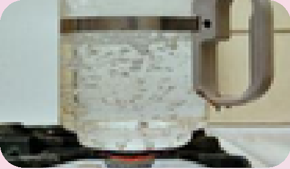
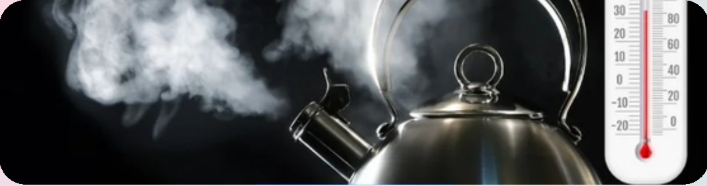

Nhiệt độ sôi


Image source: Topic 1 image sources
| Vietnamese | Nhiệt độ sôi |
|---|---|
| English | Boiling point |
| Pronunciation | /ˈbɔɪ.lɪŋ ˌpɔɪnt/ or /ˈbɔɪlɪŋ pɔɪnt/ |
| Word type | Noun |
Meaning (Vietnamese)
Nhiệt độ sôi hay điểm sôi của một chất lỏng là nhiệt độ mà áp suất hơi của chất lỏng bằng với áp suất chung quanh chất lỏng. Khi đạt tới ngưỡng đó thì chất chuyển trạng thái từ lỏng sang khí.
Meaning (English)
The boiling point of a substance is the temperature at which the vapor pressure of a liquid equals the pressure surrounding the liquid and the liquid changes into a vapor.
Example
The boiling point of a liquid varies depending upon the surrounding environmental pressure.
Nhiệt độ sôi của một chất lỏng thay đổi tùy thuộc vào áp suất môi trường xung quanh.
Another definition from the notes
Nhiệt độ sôi hay điểm sôi của một chất lỏng là nhiệt độ mà áp suất hơi của chất lỏng bằng với áp suất chung quanh chất lỏng. Khi đạt tới ngưỡng đó thì chất chuyển trạng thái từ lỏng sang khí. the liquid and the liquid changes into a vapor
The boiling point of a substance is the temperature at which the vapor pressure of a liquid equals the pressure surrounding
Another definition from the notes
Temperature at which liquid vapor pressure equals surrounding pressure to become vapor.
Another definition from the notes
Temperature at which a liquid boils.
Source of information: Vietnamese Wikipedia; English Wikipedia; Topic 1 notes (see Sources)